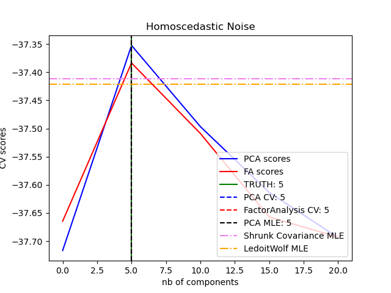
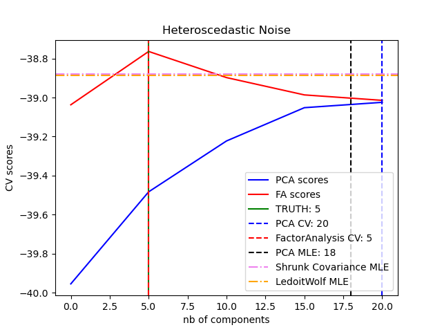

Note
Click here to download the full example code or to run this example in your browser via Binder
Model selection with Probabilistic PCA and Factor Analysis (FA)¶
Probabilistic PCA and Factor Analysis are probabilistic models. The consequence is that the likelihood of new data can be used for model selection and covariance estimation. Here we compare PCA and FA with cross-validation on low rank data corrupted with homoscedastic noise (noise variance is the same for each feature) or heteroscedastic noise (noise variance is the different for each feature). In a second step we compare the model likelihood to the likelihoods obtained from shrinkage covariance estimators.
One can observe that with homoscedastic noise both FA and PCA succeed in recovering the size of the low rank subspace. The likelihood with PCA is higher than FA in this case. However PCA fails and overestimates the rank when heteroscedastic noise is present. Under appropriate circumstances (choice of the number of components), the held-out data is more likely for low rank models than for shrinkage models.
The automatic estimation from Automatic Choice of Dimensionality for PCA. NIPS 2000: 598-604 by Thomas P. Minka is also compared.
# Authors: Alexandre Gramfort
# Denis A. Engemann
# License: BSD 3 clause
Create the data¶
import numpy as np
from scipy import linalg
n_samples, n_features, rank = 500, 25, 5
sigma = 1.0
rng = np.random.RandomState(42)
U, _, _ = linalg.svd(rng.randn(n_features, n_features))
X = np.dot(rng.randn(n_samples, rank), U[:, :rank].T)
# Adding homoscedastic noise
X_homo = X + sigma * rng.randn(n_samples, n_features)
# Adding heteroscedastic noise
sigmas = sigma * rng.rand(n_features) + sigma / 2.0
X_hetero = X + rng.randn(n_samples, n_features) * sigmas
Fit the models¶
import matplotlib.pyplot as plt
from sklearn.decomposition import PCA, FactorAnalysis
from sklearn.covariance import ShrunkCovariance, LedoitWolf
from sklearn.model_selection import cross_val_score
from sklearn.model_selection import GridSearchCV
n_components = np.arange(0, n_features, 5) # options for n_components
def compute_scores(X):
pca = PCA(svd_solver="full")
fa = FactorAnalysis()
pca_scores, fa_scores = [], []
for n in n_components:
pca.n_components = n
fa.n_components = n
pca_scores.append(np.mean(cross_val_score(pca, X)))
fa_scores.append(np.mean(cross_val_score(fa, X)))
return pca_scores, fa_scores
def shrunk_cov_score(X):
shrinkages = np.logspace(-2, 0, 30)
cv = GridSearchCV(ShrunkCovariance(), {"shrinkage": shrinkages})
return np.mean(cross_val_score(cv.fit(X).best_estimator_, X))
def lw_score(X):
return np.mean(cross_val_score(LedoitWolf(), X))
for X, title in [(X_homo, "Homoscedastic Noise"), (X_hetero, "Heteroscedastic Noise")]:
pca_scores, fa_scores = compute_scores(X)
n_components_pca = n_components[np.argmax(pca_scores)]
n_components_fa = n_components[np.argmax(fa_scores)]
pca = PCA(svd_solver="full", n_components="mle")
pca.fit(X)
n_components_pca_mle = pca.n_components_
print("best n_components by PCA CV = %d" % n_components_pca)
print("best n_components by FactorAnalysis CV = %d" % n_components_fa)
print("best n_components by PCA MLE = %d" % n_components_pca_mle)
plt.figure()
plt.plot(n_components, pca_scores, "b", label="PCA scores")
plt.plot(n_components, fa_scores, "r", label="FA scores")
plt.axvline(rank, color="g", label="TRUTH: %d" % rank, linestyle="-")
plt.axvline(
n_components_pca,
color="b",
label="PCA CV: %d" % n_components_pca,
linestyle="--",
)
plt.axvline(
n_components_fa,
color="r",
label="FactorAnalysis CV: %d" % n_components_fa,
linestyle="--",
)
plt.axvline(
n_components_pca_mle,
color="k",
label="PCA MLE: %d" % n_components_pca_mle,
linestyle="--",
)
# compare with other covariance estimators
plt.axhline(
shrunk_cov_score(X),
color="violet",
label="Shrunk Covariance MLE",
linestyle="-.",
)
plt.axhline(
lw_score(X),
color="orange",
label="LedoitWolf MLE" % n_components_pca_mle,
linestyle="-.",
)
plt.xlabel("nb of components")
plt.ylabel("CV scores")
plt.legend(loc="lower right")
plt.title(title)
plt.show()
- 
- 
best n_components by PCA CV = 5
best n_components by FactorAnalysis CV = 5
best n_components by PCA MLE = 5
best n_components by PCA CV = 20
best n_components by FactorAnalysis CV = 5
best n_components by PCA MLE = 18
Total running time of the script: ( 0 minutes 2.543 seconds)